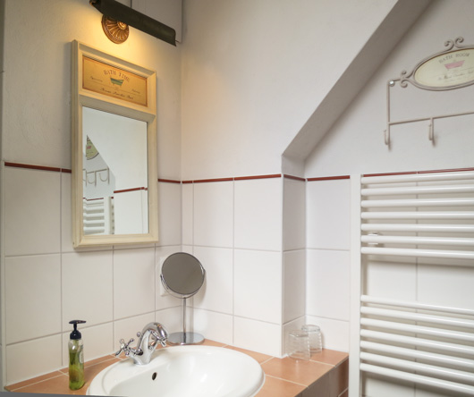

Zimmer Nr. 1 / 1. Etage
Ein schöner romantischer Raum: schlafen Sie in dem gemütlichen 180 cm breiten Doppelbett unter einem Baldachin aus Baumwolle und beginnen Sie ganz in Ruhe ihren Tag. Sie betreten das Schlafzimmer durch einen seperaten Vorraum, in dem sich auch der Kleiderschrank befindet. Von dort aus haben Sie zudem Zugang zu ihrem eigenen Badezimmer mit großer Duschbadewanne. Das große gemütliche Schlafzimmer hat mehrere Sitzgelegenheiten und einen kleinen Schreibtisch, zudem erlaubt es einen wunderbaren zentralen Blick auf die Dorfallee.

Zimmer Nr. 2 / 1. Etage
Ein romantisches Familienzimmer mit Doppelbett und einem nostalgisch anmutenden Einzelbett. Schönes helles Badezimmer mit antikem Waschtisch und großer Duschbadewanne. Nach vorne gelegen mit Blick auf die kastanienbesäumte Dorfallee in Richtung Nord-Ost.

Zimmer Nr. 3 / 1. Etage
Ein kuscheliger Rückzugsort mit einem schönen extra breiten Doppelbett und einem originalen Schminktisch aus Uromas Zeiten. Im Badezimmer befindet sich ein alter Waschtisch aus den 1920er Jahren und eine große Duschbadewanne. Das Zimmer liegt ruhig nach Osten zum benachbarten Dreiseithof, auf dessen Dach man blickt und darüber den Himmel sieht.

Zimmer Nr. 4 / 2. Etage
Das Blaue Zimmer: Maritim ohne kitschig zu sein, Boxspring-Doppelbett mit zentralem Blick zur Dorfallee nach Nord/Ost und Blick nach Westen über die Kunsthalle aufs Land. Französische Balkone und ein Bad mit großer Duschbadewanne.
Zimmer Nr. 5 / 2. Etage
Für die, die es gerne kuschelig mögen: Charmantes Einzelzimmer mit Blick auf die kastanienbesäumte Dorfallee von zwei französischen Balkonen. Im 140 cm breiten französischen Bett wird es kuschelig. Ein nostalgischer Schreibtisch mit Stuhl, ein Korbstuhl, ein Kleiderständer, ein Schrank, ein Nachttisch, ein Bett, alles da. Zum Zimmer gehört ein kleines Bad mit Duschsitzbadewanne.
Zimmer Nr. 6 / 2. Etage
Sonnig und lichtdurchflutet bietet dieses Zimmer Platz für eine kleine Familie. Neben einem großen 2,20 cm breiten Doppelbett befinden sich in der Dachschräge noch zwei kuschelige Kinderbetten a 70 x 190 cm. Vom großen Bett aus genießen Sie den Sonnenaufgang, durch das Dachfenster den Sternenhimmel. Zum Zimmer gehört ein sehr kleines, aber helles Bad mit niedriger Duschbadewanne. Vom französischen Balkon aus haben Sie einen Blick auf die kastanienbesäumte Dorfallee.

Zimmerausstattung:
-
Fön, Duschmatte, Klopapier, Seife, Kosmetiktücher, Duschgel
- verschiedene Kissen zur Auswahl, extra Wolldecken
- teilweise Moskitonetze
|